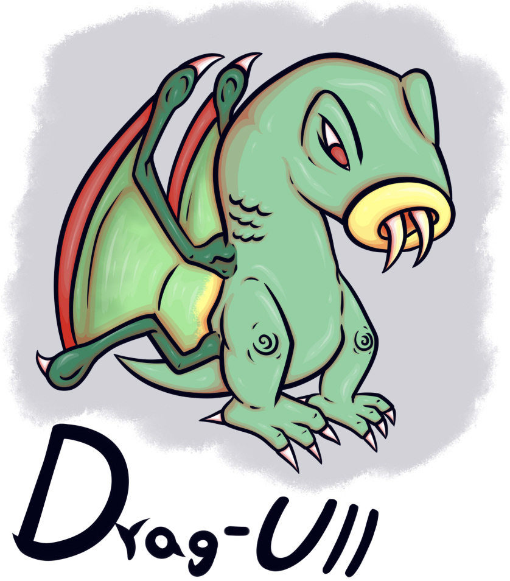

Drag-Ull are Natura Earthrast Heavyblooded that fly through the harsh environments of Resize in search of prey.
Drag-Ull are thick, elongated green scaly creatures with a pair of powerful legs ending in white claws, and a short tail on the back. They possess four thin arms that also end in claws, with membranes connecting them to form wings. They have red eyes and a yellow mouth from which two long tusks protrude.
Drag-Ull are creatures native to the desert region of Resize and are not naturally found anywhere else in the world. There are concerns that they could become an invasive species if introduced to other environments, so their exportation is heavily restricted.
Their wings appear too small to support their large bodies, yet Drag-Ull can maneuver through the air with remarkable speed and precision. They are surprisingly lightweight, and their wings allow them to ride air currents with great control. Some believe they use the heat waves rising from the hot desert dunes to fly, but this is merely a myth.
Drag-Ull can consume both blood and carrion. They use their tusks to pierce their victims and suck their blood through their sucker-like lips. When feeding on carrion, they can retract their tusks and take large bites from the remains, swallowing the chunks whole.
If their claws or tusks break, replacements begin to grow beneath the damaged structures, gradually pushing the broken parts outward until they fall off entirely. They can regenerate these features an unlimited number of times through this process, although doing so requires a considerable amount of energy. Drag-Ull nests can often be identified by the numerous discarded claws and tusks scattered around them.
They inhabit caves, notches in stone walls, and any other small, dark spaces they can find. Although they prefer claustrophobic environments, Drag-Ull nesting in larger spaces show little concern for sharing their shelter with as many individuals as it can accommodate, even when overcrowding negatively affects them.
Drag-Ull have excellent vision, allowing them to see their surroundings clearly both under the blinding sunlight of the day and in the darkness of night. They can also independently rotate their eyes 180 degrees within their scalp, allowing them to observe their surroundings more effectively.
Drag-Ull are intelligent creatures capable of hunting both alone and in packs. When pursuing prey, they circle above it while waiting for an opportunity to swoop down and stab it with their tusks, using their claws to pin it down. However, if their prey appears capable of defending itself or preventing a direct attack, they may instead circle around it and wait to see whether the harsh desert conditions eventually kill it. Once the prey dies, they dive toward the corpse to be among the first to feed on it. If the prey manages to find shelter or escape to safety, the Drag-Ull simply fly away in search of another target.
Their skin can absorb moisture, helping them remain hydrated for extended periods of time. However, this adaptation can also be detrimental. Drag-Ull cannot survive in tropical or highly humid environments because their skin absorbs excessive amounts of water, becoming waterlogged and too heavy for flight, eventually leading to their death.
Drag-Ull lay eggs in secondary nests, which are usually located in isolated areas far from their primary nests. The eggs hatch without parental assistance, producing pink-colored hatchlings. These young Drag-Ull learn to fly quickly and remain close to oases and similar environments, where they drink water and feed on whatever they can find while taking great care to avoid detection by other creatures. Once they reach a sufficient age, they begin hunting properly.
Drag-Ull eggs are highly sought after because of their health benefits, high protein content, and fiber content. Even just their eggshells can be processed and cooked for consumption. In the past, the people of Resize relied on these eggs as an important source of sustenance.
When facing extreme danger, Drag-Ull can detach their own tails, which contain poison and explode shortly after being shed. The resulting poison is corrosive and can severely damage the skin of anyone exposed to it, although it dries out quickly when exposed to air. Once detached, a Drag-Ull's tail does not grow back.
Drag-Ull are considered highly dangerous creatures and should be avoided at all costs. Their nests are destroyed, and their populations are driven away from towns. Due to their speed and agility, hunting them is extremely difficult, making the displacement of their populations the most effective measure the people of Resize can take to protect themselves.
Culturally, Drag-Ull are regarded as harbingers of death and bad luck. The presence of a nest near a house is believed to bring infertility and illness to the settlement's inhabitants. Eating any part of a Drag-Ull other than its eggs is considered both disgusting and unhealthy.
Drag-Ull share numerous morphological and genetic similarities with the Agala species. This has led to the theory that Drag-Ull may be a branch of Agala that evolved from aquatic ancestors into terrestrial creatures, in a manner similar to how Garden Agala evolved to inhabit the oceans of Mareala, while retaining a comparable blood-feeding behavior. However, Agala are native to tropical regions and historically are not found anywhere near Resize, yet this theory remains strong, it is even theorized the key to the origin of the Earthrast can be found on the Drag-Ull.

Branch: Natura
Category: Earthrast
Subcategory: Heavyblooded
Etymology: "Dragon" + "Dracula" + "Ghoul"
Sex Ratio: 50% Male/50% Female
Sapience: ---